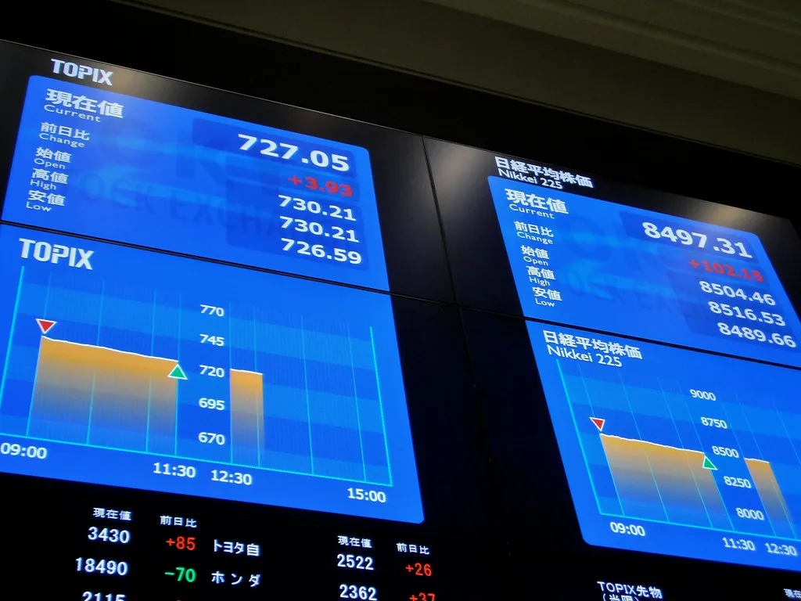
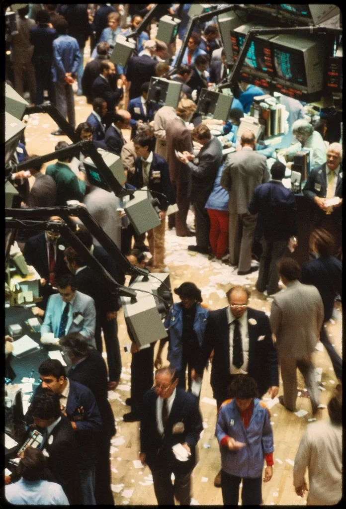

11월 첫 거래일인 2일, 코스피가 미국 반도체주 급락의 여파로 하락 출발했다. 코스피는 장 초반 전 거래일 대비 1% 넘게 떨어지며 5600선대로 밀려났고, 코스닥지수도 같은 시각 전장보다 0.7% 내린 719.33을 기록했다. 외국인과 개인의 매도세가 동시에 유입되면서 지수를 끌어내렸다. 지난주 코스피가 반도체 랠리에 힘입어 사상 최고치권을 오르내렸던 것과 비교하면 분위기가 급격히 반전된 모습이다.
이번 하락은 지난주 미국 증시에서 벌어진 빅테크·반도체주 동반 급락의 영향이 컸다. 필라델피아 반도체지수는 하루 만에 7.2% 급락했는데, 구글 모회사 알파벳에 이어 아마존과 인텔이 내놓은 실적과 향후 전망이 시장의 기대치를 밑돌면서 투자자들의 불안이 커진 결과다. 국내 시장에서도 삼성전자와 SK하이닉스 등 반도체 대형주가 동반 약세를 보이며 지수 하락을 주도했다. 두 종목이 코스피 전체 시가총액에서 차지하는 비중이 큰 만큼, 이들의 등락이 지수 흐름을 좌우하는 구조가 이번에도 그대로 재연된 셈이다.

시장이 흔들린 근본적인 배경은 인공지능 투자 지속성에 대한 회의론이 다시 고개를 든 것이다. 올해 내내 글로벌 빅테크들의 막대한 AI 설비투자가 증시 상승을 견인해 왔지만, 정작 이들 기업의 최근 실적 발표에서 투자 대비 수익성에 대한 의문이 제기되면서 투자자들이 리스크를 다시 저울질하기 시작했다는 분석이다. 특히 반도체 업종은 AI 투자 사이클에 대한 민감도가 높아 미국 시장의 분위기 변화에 그대로 노출된 모습이다. 그동안 메모리 반도체 가격 상승과 수출 호조가 국내 증시를 뒷받침해 왔던 터라, 이번 미국발 변동성이 일시적 조정에 그칠지 추세 전환의 신호가 될지를 두고 시장의 평가가 엇갈리고 있다.
국내 증권가의 시선은 엇갈린다. 지난주 급락으로 악재가 이미 상당 부분 선반영된 만큼 저가 매수세가 유입될 여지가 있다는 분석과, 미국 빅테크들의 추가 실적 발표가 줄줄이 예정돼 있어 단기적으로는 변동성이 이어질 수밖에 없다는 신중론이 함께 나온다. 실제로 장중에는 기관 투자자들의 매수세가 유입되며 낙폭이 다소 줄어드는 흐름도 포착됐다.

그동안 코스피는 반도체 업종의 호실적과 수출 호조에 힘입어 사상 최고치를 잇따라 경신하며 가파른 상승세를 보여왔다. 하지만 이번 미국발 변동성은 그 상승세가 얼마나 AI 투자 기대감에 기대고 있었는지를 다시 확인시켜준 계기가 됐다는 평가다. 반도체 수출이 실물 경제 지표에서는 여전히 견조한 모습을 보이고 있는 만큼, 주가와 실적 사이의 간극을 어떻게 해석할지가 투자자들의 과제로 남았다.
전문가들은 당분간 뉴욕증시의 빅테크 실적과 미국 연방준비제도의 통화정책 관련 발언에 국내 증시가 민감하게 반응할 가능성이 크다고 내다본다. AI 투자 지속 가능성에 대한 시장의 신뢰가 회복되는지가 반도체주를 비롯한 국내 증시 전반의 다음 방향을 결정할 핵심 변수가 될 것으로 보인다. 당분간 국내외 증시 모두 빅테크들의 추가 실적 발표 일정에 따라 등락을 반복하는 변동성 장세가 이어질 가능성이 높다는 전망이 우세하다.